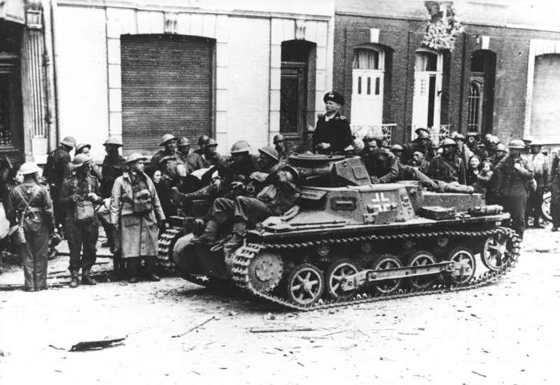

The Panzer I was a light tank produced in Nazi Germany in the 1930s. Its name is short for Panzerkampfwagen I (German for "armored fighting vehicle mark I"), abbreviated as PzKpfw I. The tank's official German ordnance inventory designation was Sd.Kfz. 101 ("special purpose vehicle 101").
Design of the Panzer I began in 1932 and mass production began in 1934. Intended only as a training tank to introduce the concept of armored warfare to the German Army, the Panzer I saw combat in Spain during the Spanish Civil War, in Poland, France, the Soviet Union and North Africa during the Second World War, and in China during the Second Sino-Japanese War. Experiences with the Panzer I during the Spanish Civil War helped shape the German Panzerwaffe's invasion of Poland in 1939 and France in 1940. By 1941, the Panzer I chassis design was used as the basis of tank destroyers and assault guns. There were attempts to upgrade the Panzer I throughout its service history, including by foreign nations, to extend the design's lifespan. It continued to serve in the Spanish Armed Forces until 1954.
The Panzer I's performance in armored combat was limited by its thin armour and light armament of two machine guns, which were never intended for use against armoured targets, rather being ideal for infantry suppression, in line with inter-war doctrine. As a design intended for training, the Panzer I was less capable than some other contemporary light tank designs, such as the Soviet T-26, although it was still relatively advanced compared to older designs, such as the Renault FT, still in service in several nations, and others. Although lacking in armoured combat as a tank, it formed a large part of Germany's mechanized forces and was used in all major campaigns between September 1939 and December 1941, where it still performed much useful service against entrenched infantry and other "soft" targets, which were unable to respond even against thin armor, and who were highly vulnerable to machine gun fire. The small, vulnerable light tank, along with its somewhat more powerful successor the Panzer II, would soon be surpassed as a front-line armoured combat vehicle by more powerful German tanks, such as the Panzer III, and later the Panzer IV, Panzer V, and Panzer VI; nevertheless, the Panzer I's contribution to the early victories of Nazi Germany during World War II was significant. Later in the war, the turrets of many obsolete Panzer Is and Panzer IIs were repurposed as gun turrets on defensive fighting positions, particularly on the Atlantic Wall.
Despite the manpower and technical limitations imposed on the German Army by the Treaty of Versailles, several Reichswehr officers established a clandestine general staff to study World War I and develop future strategies and tactics. Although at first the concept of the tank as a mobile weapon of war met with apathy, German industry was encouraged to look into tank design, while quiet cooperation was undertaken with the Soviet Union. There was also minor military cooperation with Sweden, including the extraction of technical data that proved invaluable to early German tank design. As early as 1926 the German companies Krupp, Rheinmetall and Daimler-Benz were contracted to develop prototype tanks armed with a large, 75-millimeter cannon. These were designed under the cover name Großtraktor (large tractor) to veil the true purpose of the vehicle. By 1930 a light tank armed with rapid-fire machineguns was to be developed under the cover name Leichttraktor (light tractor). The six produced Großtraktor were later put into service for a brief period with the 1 Panzer Division; the Leichttraktor remained in testing until 1935.
In the late 1920s and early 1930s, German tank theory was pioneered by two figures: General Oswald Lutz and his chief of staff, Lieutenant Colonel Heinz Guderian. Guderian became the more influential of the two and his ideas were widely publicized. Like his contemporary, Sir Percy Hobart, Guderian initially envisioned an armored corps (panzerkorps) composed of several types of tanks. This included a slow infantry tank, armed with a small-caliber cannon and several machine guns. The infantry tank, according to Guderian, was to be heavily armored to defend against enemy anti-tank guns and artillery. He also envisioned a fast breakthrough tank, similar to the British cruiser tank, which was to be armoured against enemy anti-tank weapons and have a large, 75-millimeter (2.95 in) main gun. Lastly, Germany needed a heavy tank, armed with a 150-millimeter (5.9 in) cannon to defeat enemy fortifications, and even stronger armor. Such a tank required a weight of 70 to 100 tonnes and was completely impractical given the manufacturing capabilities of the day.
The Panzer I's design history can be traced to the British Carden Loyd tankette, of which it borrowed much of its track and suspension design. After six prototype Kleintraktor were produced the cover name was changed to Krupp-Traktor whereas the development codename was changed to Landwirtschaftlicher Schlepper (La S) (Agricultural Tractor). The La S was intended not just to train Germany's panzer troops, but to prepare Germany's industry for the mass production of tanks in the near future; a difficult engineering feat for the time. The armament of production versions was to be two 7.92 mm MG 13 machine guns in a rotating turret. Machine guns were known to be largely useless against even the lightest tank armour of the time, restricting the Panzer I to a training and anti-infantry role by design. The final official designation, assigned in 1938, was Panzerkampfwagen I (M.G.) with special ordnance number Sd.Kfz. 101. The first 150 tanks (1./LaS, 1st series LaS, Krupp-Traktor), produced in 1934, did not include the rotating turret and were used for crew training. Following these, production was switched to the combat version of the tank. The Ausf. A was under-armoured, with steel plate of only 13 millimeters (0.51 in) at its thickest. The tank had several design flaws, including suspension problems, which made the vehicle pitch at high velocities, and engine overheating. The driver was positioned inside the chassis and used conventional steering levers to control the tank, while the commander was positioned in the turret where he also acted as gunner. The two crewmen could communicate by means of a voice tube. Machine gun ammunition was stowed in five bins, containing various numbers of 25-round magazines. 1,190 of the Panzerkampfwagen I Ausf. A were built in three series (2.-4./LaS). Further 25 were built as command tanks.
Many of the problems in the Ausf. A were corrected with the introduction of the Ausf. B. The air-cooled engine (producing just 60 metric horsepower (44 kW) was replaced by a water-cooled, six-cylinder Maybach NL 38 TR, developing 100 metric horsepower (74 kW), and the gearbox was changed to a more reliable model. The larger engine required the extension of the vehicle's chassis by 40 cm (16 in), and this allowed the improvement of the tank's suspension, adding another bogie wheel and raising the tensioner. The tank's weight increased by 0.4 tons. Production of the Ausf. B began in August 1936 and finished in summer 1937 after 399 had been built in two series (5a-6a/LaS). Further 159 were built as command tanks in two series, 295 chassis were built as turretless training tanks. 147 more training tanks were built as convertible chassis with hardened armour with option to upgrade them to full combat status by adding superstructure and turret.

On 18 July 1936, war broke out on the Iberian peninsula as Spain dissolved into a state of civil war. After the chaos of the initial uprising, two opposing sides coalesced and began to consolidate their position—the Popular front (the Republicans) and the Spanish Nationalist front. In an early example of a proxy war, both sides quickly received support from other countries, most notably the Soviet Union and Germany as both wanted to test their tactics and equipment. The first shipment of foreign tanks, 50 Soviet T-26s, arrived on 15 October. The shipment was under the surveillance of Nazi Germany's Kriegsmarine and Germany immediately responded by sending 41 Panzer I's to Spain a few days later. This first shipment was followed by four more shipments of Panzer I Ausf. B's, with 122 vehicles shipped in total.
The first shipment of Panzer I's was brought under the command of Lieutenant Colonel Wilhelm Ritter von Thoma in Gruppe Thoma (also referred to as Panzergruppe Drohne). Gruppe Thoma formed part of Gruppe Imker, the ground formations of the German Condor Legion, who fought on the side of Franco's Nationalists. Between July and October, a rapid Nationalist advance from Seville to Toledo placed them in position to take the Spanish capital, Madrid. The Nationalist advance and the fall of the town of Illescas to Nationalist armies on 18 October 1936 caused the government of the Popular Front's Second Republic, including President Manuel Azaña, to flee to Barcelona and Valencia. In an attempt to stem the Nationalist tide and gain crucial time for Madrid's defence, Soviet armour was deployed south of the city under the command of Colonel Krivoshein before the end of October. At this time, several T-26 tanks under the command of Captain Paul Arman were thrown into a Republican counterattack directed towards the town of Torrejon de Velasco in an attempt to cut off the Nationalist advance north. This was the first recorded tank battle in the Spanish Civil War. Despite initial success, poor communication between the Soviet Republican armour and Spanish Republican infantry caused the isolation of Captain Arman's force and the subsequent destruction of a number of tanks. This battle also marked the first use of the molotov cocktail against tanks. Ritter von Thoma's Panzer Is fought for the Nationalists only days later on 30 October, and immediately experienced problems. As the Nationalist armour advanced, it was engaged by the Commune de Paris battalion, equipped with Soviet BA-10 armoured cars. The 45-millimeter gun in the BA-10 was more than sufficient to knock out the poorly armoured Panzer I at ranges below 500 meters (550 yd).
Although the Panzer I would participate in almost every major Nationalist offensive of the war, the Nationalist army began to deploy more and more captured T-26 tanks to offset their disadvantage in protection and firepower. At one point, von Thoma offered up to 500 pesetas for each T-26 captured. Although the Panzer I was initially able to knock out the T-26 at close range—150 meters (165 yd) or less—using an armor-piercing 7.92 millimeter bullet, the Republican tanks began to engage at ranges where they were immune to the machine guns of the Panzer I.
On 1 September 1939, Germany invaded Poland using seventy-two divisions (including 16 reserve infantry divisions in OKH reserves), including seven panzer divisions (1., 2., 3., 4., 5., 10., "Kempf") and four light divisions (1., 2., 3., 4.). Three days later, France and Britain declared war on Germany. The seven panzer and four light divisions were arrayed in five armies, forming two army groups. The battalion strength of the 1st Panzer Division included no less than fourteen Panzer Is, while the other six divisions included thirty-four. A total of about 2,700 tanks were available for the invasion of Poland, but only 310 of the heavier Panzer III and IV tanks were available. Furthermore, 350 were of Czech design—the rest were either Panzer Is or Panzer IIs. The invasion was swift and the last Polish pockets of resistance surrendered on 6 October. The entire campaign had lasted five weeks (with help of the Soviet forces, which attacked on 17 September), and the success of Germany's tanks in the campaign was summed up in response to Hitler on 5 September: when asked if it had been the dive bombers who destroyed a Polish artillery regiment, Guderian replied, "No, our panzers!"
Furthermore, it was found that the handling of armoured forces during the campaign left much to be desired. During the beginning of Guderian's attack in northern Poland, his corps was held back to coordinate with infantry for quite a while, preventing a faster advance. It was only after Army Group South had its attention taken from Warsaw at the Battle of Bzura that Guderian's armour was fully unleashed. There were still lingering tendencies to reserve Germany's armour, even if in independent divisions, to cover an infantry advance or the flanks of advancing infantry armies. Although tank production was increased to 125 tanks per month after the Polish Campaign, losses forced the Germans to draw further strength from Czech tank designs, and light tanks continued to form the majority of Germany's armored strength.
Despite its obsolescence, the Panzer I was also used in the invasion of France in May 1940. Of 2,574 tanks available for the campaign, no fewer than 523 were Panzer Is, while there were 627 Panzer IIIs and IVs, 955 Panzer II, 106 Czech Panzer 35(t), and 228 Panzer 38(t). For their defense, the French boasted up to 4,000 tanks, including 300 Char B1, armed with a 47 mm (1.7 in) gun in the turret and a larger 75 mm (2.95 in) low-velocity gun in the hull. The French also had around 250 Somua S-35, widely regarded as one of the best tanks of the period, armed with the same 47 mm main gun and protected by almost 55 mm (2.17 in) of armour at its thickest point. Nevertheless, the French also deployed over 3,000 light tanks, including about 500 World War I-vintage FT-17s. The two main advantages that German armor enjoyed were radios allowing them to coordinate faster than their British or French counterparts,[66] and superior tactical doctrine, in addition to markedly faster speed, generally.